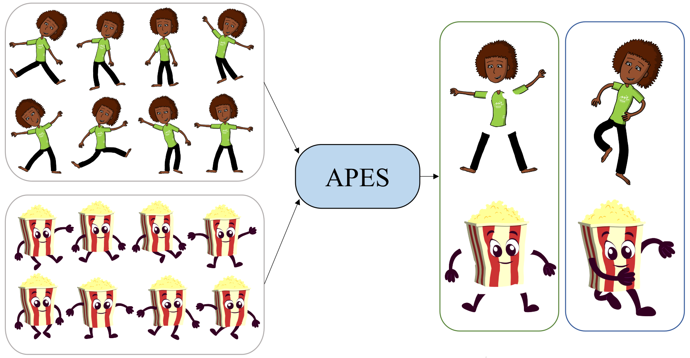

APES: Articulated Part Extraction from Sprite Sheets
CVPR 2022

Abstract
Rigged puppets are one of the most prevalent representations to create 2D character animations. Creating these puppets requires partitioning characters into independently moving parts. In this work, we present a method to automatically identify such articulated parts from a small set of character poses shown in a sprite sheet, which is an illustration of the character that artists often draw before puppet creation. Our method is trained to infer articulated body parts, e.g. head, torso and limbs, that can be re-assembled to best reconstruct the given poses. Our results demonstrate significantly better performance than alternatives qualitatively and quantitatively.